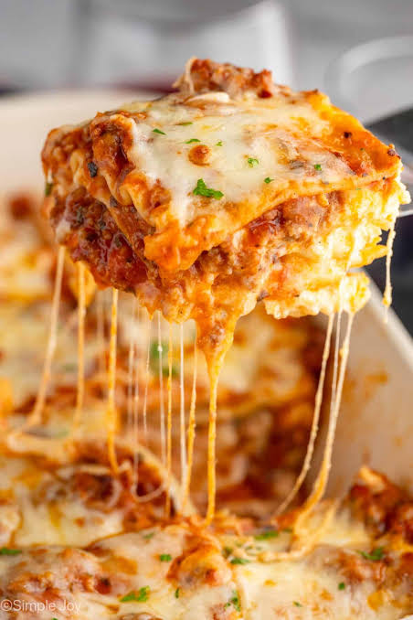

Lasagna is the ultimate comforting Italian dish, built on layers of tender pasta sheets, rich savory sauce, and a decadent blend of melted cheeses. The foundation of a great lasagna begins with a deeply flavored ragù, typically made by simmering ground beef, Italian sausage, garlic, and onions in a robust, herb-infused tomato sauce.
This savory meat mixture is alternated between wide lasagna noodles and a creamy cheese filling, which traditionally features riccota, a touch of egg for binding, fresh parsley, and a generous handful of parmesan. Each layer brings a perfect balance of textures, ensuring every bite is packed with savory, herbaceous depth